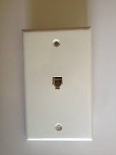
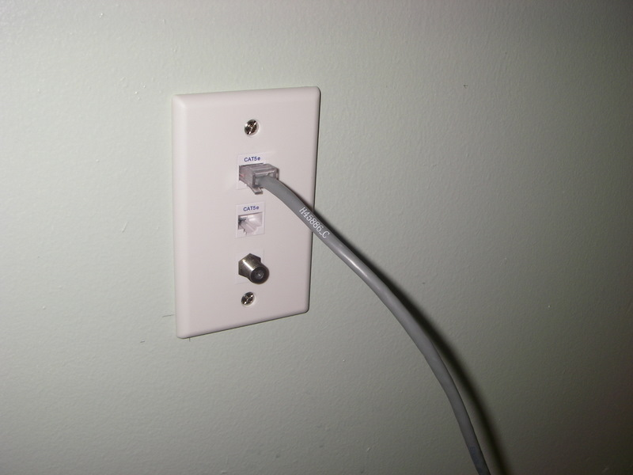
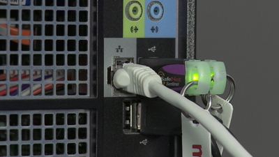
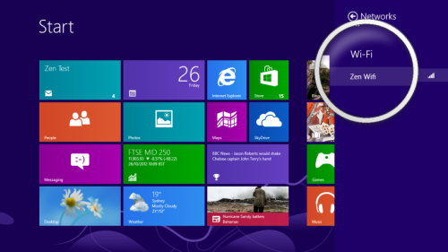

How To Set Up Your New Computer!!!
Part One: Connecting To Internet
So, you just got a brand new computer. Good for you! No matter if the computer is for home, work or school, the first thing you'd want to do is get that computer online, right? Well then, lets get started.
There are two ways to get your computer online. They are ethernet and WI-FI. Think of ethernet as an old timey wallphone. You can't really mve around when connected to ethernet, but no matter where you are, as long as the phone is connected to a wall, you can call anyone. Think of WIFI as a cellphone. You can walk around your house talking on it for hours, but you might lose signal if you go into the basement. But before you do any of that, you will need a home network. To set one up, you will need a router. Each router will come with its own instructions, so follow them. You will also use this router to connect to WI-FI directly and during set up you will connect your Ethernet to it.
How to connect to the Internet via ethernet
- First, make sure where you are setting up the computer is close to an ethernet plug. An ethernet plug looks like this:

- Plug the ethernet wire into the wall plug, so it looks like this:

- Plug the other end of the ethernet wire into your computer, so it looks like this:

- Turn on your computer and check the internet connection. A pop-up will appear asking if you would like to make your ethernet value an unlocked or locked network. After you make this choice, it should say you are connected to the internet, through ethernet.
How to connect to the Internet via WI-FI
- Turn on your computer and click on this little symbol. This is the symbol for Windows 10 and it may look different on your operating system.

- Click on what you named your WI-FI router. In this example, it is named Zen Wifi.

- If you set a password to your network, type it in. Once you do that, you are connected to the Internet.
Next, I will teach you how to install applications onto your computer. Just click this link!
Image Sources